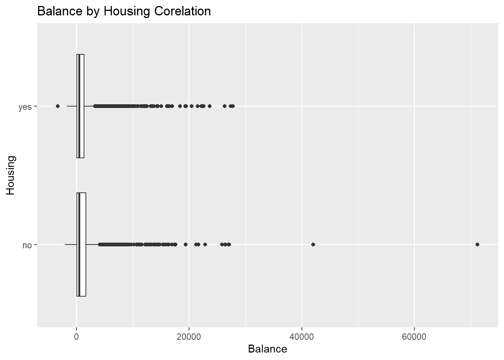
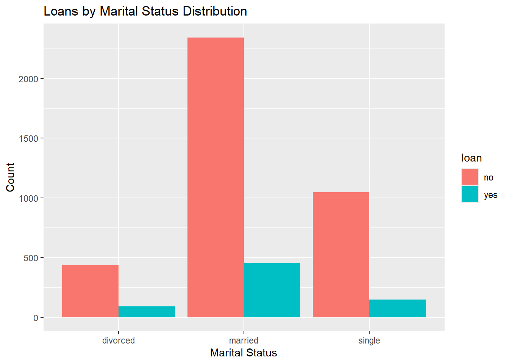

The data has been read into the object ‘mwvandes_beans’. This object is anexcel file that has 9,527 entries variables and, 17 total column observations.
Changing the Data Set to Remove, Rename, Filter, Mutate [Using separate ‘mutate()’calls because using ’if_else’ is tricky with multiple conditions. Using ‘case_when’ would work, however I am having trouble using that form. I used ChatGPT to trouble shoot this but I still couldn’t figure how to implement ‘if_else’], and Arrange (Using the dplyr::desc function) the variables.
For example, in the Bombay bean class, the statistics that the code has pulled up for us shows the measures for the Sample Size, Perimeter in the 5th percentile, the Perimeter range and median, the Length in the 5th percentile and the range and median of the Length. These measures help us understand the distribution of ‘Perimeter’ and ‘LengthMaj’.
OPEN ENDED
I chose the ’Bank Marketing’dataset “https://archive.ics.uci.edu/dataset/222/bank+marketing” because of my interest in Marketing. I was in Spain for all of May studying Marketing and really enjoyed it so this dataset caught my eye when I was scrolling through them. Marketing data is also very fasciniating because of all the different variable in play.
Loading in read_csv
library(readr)
reading the bank marketing data. Since I was having trouble with the formatting of the CSV file (R kept reading the headers as 1 single column. I went on the Stackoverflow forums and used that data to create my own code to reformat the CSV file in R)
Bank_Marketing <-read_csv2(file ="bank.csv")
i Using "','" as decimal and "'.'" as grouping mark. Use `read_delim()` for more control.
Rows: 4521 Columns: 17
-- Column specification --------------------------------------------------------
Delimiter: ";"
chr (10): job, marital, education, default, housing, loan, contact, month, p...
dbl (7): age, balance, day, duration, campaign, pdays, previous
i Use `spec()` to retrieve the full column specification for this data.
i Specify the column types or set `show_col_types = FALSE` to quiet this message.
View(Bank_Marketing)
Questions about the Data Set
1. Is there a relationship between ‘balance’ and ‘housing’?
2. Is there a relationship between ‘loan’ and ‘marital status’?
Starting with question 1, we will pull up the summary for balance x housing status. We will do this by similarly grouping as we did for the beans summary.
To get a boxplot to show the correlation between ‘balance’ and ‘housing’ using the ‘ggplot’ function and in that the subset ‘geom_boxplot’
ggplot(Bank_Marketing, aes( x = balance, y = housing)) +geom_boxplot() +labs(title ="Balance by Housing Corelation", x ="Balance", y ="Housing")

The plot showed that people that said “no” for housing tended to have a slightly lower balance in their account to those who said “yes”. However there are outliers in the “no” category that have a significantly higher acount balance than those who said “yes”.
On to question 2. We will create a contigency table similar to the beans to show the ‘marital status’ with and without ‘loans’.
To get a bargraph to show the correlation for each variance (single, married, divorced) and loan status, we will use the ‘ggplot’ function and its subset ‘geom_bar’
ggplot(Bank_Marketing, aes(x = marital, fill = loan)) +geom_bar(position ="dodge") +labs(title ="Loans by Marital Status Distribution", x ="Marital Status", y ="Count", fill ="loan")

With the bar graph that we just made we can see that there really is no correlation between marital status and loans. A better question would have been if there was a correlation between housing and marital status or housing and loans